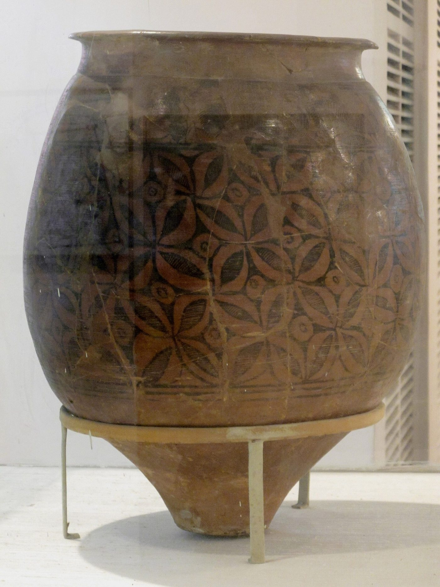
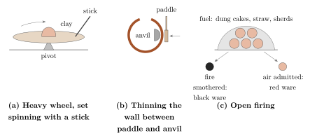
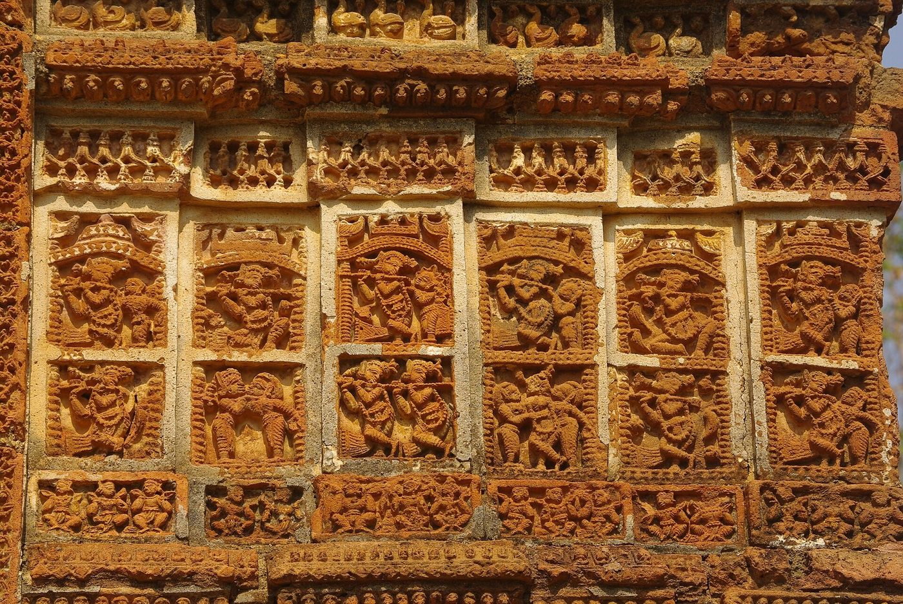
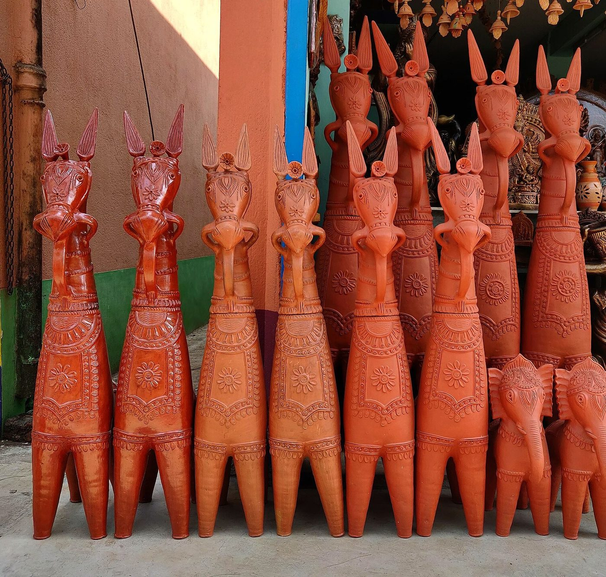

Chapter 6: Kumbhakāra: Pottery and Terracotta¶
Pottery is the most abundant evidence of the human past in South Asia, and the potter is the most widespread of Indian artisans. Every village needed water-pots, cooking pots, storage jars and lamps, and every household ritual required new earthen vessels. Archaeologists use the changing forms and wares of pottery to define cultures and periods; anthropologists find in the potter’s caste and craft a key to the village economy. This chapter surveys the archaeological wares, the potter’s techniques, the terracotta traditions and the glazed and studio pottery of recent centuries.
6.1 Pottery in the Archaeological Record¶
6.1.1 From Mehrgarh to the Indus Cities¶
Pottery appears at Mehrgarh in Baluchistan in the sixth millennium BCE, and wheel-thrown pottery by the fourth millennium. The mature Harappan cities (c. 2600–1900 BCE) produced a remarkably standardised range of wheel-made red ware, often painted in black with geometric designs, intersecting circles, fish-scales and pipal leaves; large storage jars, dish-on-stand forms and perforated jars are characteristic (Figure 6.1a). Potters’ kilns have been found in several Indus cities. Besides pottery, Indus craftsmen made glazed faience and a very hard fired stoneware used for bangles, both of which required careful control of firing (Kenoyer 1998).
6.1.2 Later Wares¶
After the decline of the Indus cities, regional cultures of the second and early first millennia BCE are known by their pottery: the Ochre Coloured Pottery of the Ganga–Yamuna Doab, the Black-and-Red Ware widespread across India, and the Painted Grey Ware (c. 1200–600 BCE; Figure 6.1b) associated with early iron-using communities of the western Ganga plain. Northern Black Polished Ware (c. 700–200 BCE), a thin, wheel-made ware with a lustrous black surface, is the hallmark of the cities of the Ganga valley in the age of the Buddha and the Mauryas (Allchin and Allchin 1982). How its glossy surface was produced is still debated; it seems to have involved a very fine slip and firing in a reducing atmosphere. In the early centuries CE, Rouletted Ware and other fine wares found at Arikamedu and other coastal sites show links with Indian Ocean trade.


6.1.3 What Potsherds Tell¶
Archaeologists rely on pottery because it is abundant, durable and sensitive to change. The shapes, fabrics, surface treatments and decoration of pots change over time and differ between regions and communities, so that sherds can be used to date layers, define cultures and trace contacts. Scientific methods add further information: thin sections examined under the microscope (petrography) and chemical analysis can identify the clays and tempers used and so the place where a pot was made; residues absorbed into the walls of pots can reveal what was cooked or stored in them, such as dairy products, meat or plant oils. Ethnographic study of living potters, who often make pots in ways similar to those of the past, helps archaeologists to interpret their finds, while reminding them that the same form can be made in very different ways.
6.2 The Potter’s Craft¶
6.2.1 Clay and Its Preparation¶
Potters select clays from river beds, tanks and fields, often mixing two or more clays and adding temper such as sand, ash or dung to reduce shrinkage and cracking. The clay is dried, broken up, soaked, sieved or allowed to settle to remove coarse particles, and kneaded by hand and foot. Different clays and tempers are used for cooking pots, which must resist sudden heating, and for water-pots, which must be porous enough to cool their contents by evaporation.
6.2.2 Forming¶
Indian potters use several methods, often in combination (Figure 6.2):
-
The wheel. In north India the wheel is usually a heavy stone or wooden disc spun with a stick and running freely for some time; in parts of the south and east a kick-wheel or a wheel turned by an assistant is used.
-
Paddle and anvil. Wheel-thrown forms are thinned and shaped by beating the outside with a wooden paddle against a stone or clay anvil held inside. Large round-bottomed water-pots are made in this way.
-
Moulds. Lamps, toys, figurines and plaques are often pressed in moulds.
-
Hand-building. Coiling and pinching are used for large storage jars and for many tribal pottery traditions.
6.2.3 Firing¶
Most village pottery is fired in open bonfires or in simple pit kilns, covered with dung cakes, straw and potsherds; some regions use updraught kilns. Black pottery is produced by smothering the fire at the end of firing, so that carbon is deposited in the surface; red pottery by allowing air to reach the pots. The best-known black wares today are those of Nizamabad in Azamgarh district, Uttar Pradesh, with incised patterns filled with a silvery pigment after firing, and of Longpi in Manipur.

6.3 Potters in Society¶
Potters (Kumhār in the north, Kumbhār in the west, Kumbāra in Karnataka, Kuyavar in Tamil Nadu, Kumor in Bengal and Assam) form a distinct jāti or set of jātis in every region of India, usually ranked in the middle or lower-middle of local hierarchies. In north India many potters call themselves Prajāpati, after the creator god, a self-description that asserts the dignity of a craft that makes forms out of clay. In the village economy potters supplied pots to households in return for grain under customary arrangements (Chapter 13), and they provided the new vessels needed for life-cycle rites, marriages and funerals. In many potter communities only men use the wheel, while women prepare clay, paint, burnish and sell pots.
Some Vedic ritual vessels were not made by potters at all. The fire-pan (ukhā) built for the great fire altar of the agnicayana and the mahāvīra pot of the Pravargya rite were shaped by the priests themselves, by hand and without a wheel, as part of the ritual. Brahmanical ritual thus valued the earthen vessel while keeping its making in priestly hands.
The pot is a powerful image in Indian thought. The Chāndogya Upaniṣad (6.1.4) argues that “by one lump of clay everything made of clay is known” (Chapter 1); in later philosophy the pot (ghaṭa) and the potter’s lump became the standard examples of cause and effect, and the space inside a pot an image of the self limited by the body. Such images reflect the familiarity of philosophers with the craft, not the social standing of potters.
The Kalaśa
The water-filled pot (kalaśa, pūrṇa-ghaṭa), crowned with mango leaves and often a coconut, is one of the most widespread auspicious symbols of Hindu, Buddhist and Jain art and ritual. It is carved on gateways and pillars from the Sanchi stūpa onwards, set up at weddings and house-warmings, and used in the consecration of temples, when water from pots is poured over the image and the finial (kumbhābhiṣeka). In most of these uses the pot may be of metal as well as clay.
6.4 Terracotta¶
6.4.1 Figurines and Plaques¶
Terracotta figurines were made in the Indus cities and in great numbers in the early historic period. Mould-made plaques of the Mauryan, Śuṅga and Kuṣāṇa periods from sites such as Chandraketugarh, Kauśāmbī and Mathurā show richly ornamented female figures, couples and narrative scenes. Terracotta panels decorated brick temples and monasteries, as at Paharpur in Bangladesh (8th–9th centuries) and in Gupta-period temples such as Bhitargaon.
The Indus cities have produced large numbers of hand-modelled terracotta figurines of women, men and animals, as well as toy carts with wheels, whistles, rattles and models of bullocks with movable heads. Their purposes, whether religious, magical or playful, are debated, but the toy carts are among the earliest evidence for wheeled vehicles in South Asia and closely resemble the bullock-carts still used in the region. In later periods, mould-made terracotta toys and figurines were produced on a large scale for markets and festivals, and the making of clay toys for fairs remains a seasonal occupation of potters in many parts of India, as at Krishnanagar in Bengal, famous for its finely modelled and painted clay figures of people of every occupation.
6.4.2 The Temples of Bengal¶
In the delta of Bengal, where building stone is scarce, brick temples of the seventeenth to nineteenth centuries were faced with moulded and carved terracotta panels showing scenes from the Rāmāyaṇa, the life of Kṛṣṇa, battles, hunts, processions and daily life. The temples built under the Malla kings at Bishnupur, among them the Śyāma Rāya (1643; Figure 6.3), the Jor-Bangla or Keṣṭa Rāya (1655) and the Madana Mohana (1694), are the best known. David McCutchion’s surveys documented hundreds of these temples and classified their forms (McCutchion 1972).


6.4.3 Votive Horses and Figures¶
Terracotta animals are offered to village and local deities throughout India. The long-necked horses of Panchmura and other villages of Bankura district in West Bengal, made by potters for offering to local deities, have become a symbol of Bengali craft (Figure 6.4). In Tamil Nadu, potters make huge terracotta horses, sometimes several metres high, for the shrines of the guardian deity Aiyaṉār, built in sections and fired in place. In many villages of Tamil Nadu the potters (Vēḷār or Kuyavar) who make these horses and the images of village deities are reported also to serve as priests (pūcāri) in the shrines of those deities, so that the maker of the image is also its ritual servant, outside the Brahmanical temple system; the practice varies from place to place. At Molela in Rajasthan, potters make painted terracotta plaques of the folk deity Devnārāyaṇ, worshipped especially by the Gujars, and of other deities, which pilgrims carry home to install in village shrines. Kramrisch’s Unknown India (1968) brought these village and tribal traditions to international attention as art in their own right (Kramrisch 1968).


6.5 Bricks and Tiles¶
Fired brick was used on a large scale in the Indus cities, whose bricks were made in standard proportions of 1:2:4, and again in the cities, stūpas and temples of the Ganga plain and the delta from the late centuries BCE. Brick-making was often done by specialised groups and by seasonal labourers. Roof tiles were used in many regions, especially in the wet south-west; in 1865 the Basel Mission established a tile factory at Mangalore, whose interlocking “Mangalore tiles” were soon made by many firms and spread across India and beyond. Today India has a very large brick industry, using clamp and kiln firing, in which many workers, including whole families, are seasonal migrants, often bound by advances to kiln owners; the industry is also a major source of air pollution. The humble brick thus raises the same questions of labour and environment as the finer crafts.
6.6 Clay Images¶
Potters and specialist image-makers make clay images of deities for festivals, which are worshipped for a few days and then immersed in rivers, tanks or the sea. The most famous are the images of Durgā and her family made for the autumn festival of Durgā Pūjā in Bengal. In the Kumartuli quarter of Kolkata, generations of image-makers (kumor, pāl) build the images on frames of bamboo and straw, coat them in layers of river clay mixed with straw and husk, and paint and dress them; similar workshops exist in towns across eastern India. In Maharashtra, the images of Gaṇeśa for the Gaṇeśa festival, which became a public festival in the 1890s under the influence of Bal Gangadhar Tilak, are made in many towns, among them Pen in Raigad district. The use of plaster of Paris and synthetic paints in place of clay and natural colours has caused pollution of water bodies, and courts and pollution-control authorities have issued guidelines encouraging a return to clay.
6.7 Glazed Pottery¶
Glazed pottery was made in the Indus cities in the form of faience, but glazed earthenware vessels became common in India only after the twelfth century, under the influence of Persian and Central Asian traditions, and chiefly for tiles and fine wares. Glazed tiles decorate Sultanate and Mughal buildings in Multan, Lahore and Delhi. The tomb of Shāh Rukn-i ʿĀlam at Multan (early fourteenth century) is covered with glazed tiles and carved brick, and the tile mosaics of the Lahore Fort and of the mosque of Wazir Khan at Lahore (1630s) are among the finest examples of the art in South Asia. The tile-makers (kāshīgar, from Kāshān in Iran, a famous centre of the craft) of Sindh, Multan and Lahore continued the tradition into modern times.
The “blue pottery” of Jaipur is not made of clay but of a frit body of ground quartz, powdered glass, fuller’s earth (multānī miṭṭī), borax and gum, shaped in moulds and painted in cobalt blue and other colours under a clear glaze. The technique is related to Persian fritware and is said to have reached Jaipur from Delhi in the nineteenth century under the patronage of Sawai Ram Singh II. It almost died out in the mid-twentieth century and was revived from the 1950s through the efforts of the painter Kripal Singh Shekhawat (1922–2008) and craft promoters such as Kamaladevi Chattopadhyay. Khurja in Uttar Pradesh, by contrast, is a centre of glazed earthenware and modern ceramics, producing both traditional blue-and-white wares and goods for the industrial market.
6.8 Pottery in the North-East and Tribal India¶
At Longpi in Ukhrul district, Manipur, potters of the Tangkhul Naga community make cooking and serving vessels by hand, without a wheel, from a mixture of ground black serpentinite rock and a special clay. The vessels are shaped with simple tools, fired in an open fire and rubbed while hot with the leaves of a local plant, which gives them their dark sheen. Many Ādivāsī communities in central and eastern India also make their own pottery by hand, sometimes as a task of women; these traditions are surveyed in Volume 23 of this series.
6.9 Regional Pottery Traditions¶
Every region has its own pottery forms and techniques; a few examples illustrate the range. In Kutch, the potters of Khavda make thin red pots painted with geometric designs in white and black before firing, a style admired for its resemblance to ancient painted wares. In Assam, potters of the Kumar and Hira communities make vessels by different methods; the Hira potters, among whom women make pots by hand without a wheel, are a well-known example of a hand-building tradition. In Manipur, besides Longpi, there are coiled and paddled traditions in the Imphal valley. In Tamil Nadu, potters make the great Aiyaṉār horses as well as everyday wares; in Kerala, potters produce the large cooking pots used in temple kitchens. In Rajasthan, Alwar was known for paper-thin pottery (kāgzī), and Pokaran and Bikaner for painted wares. The potters of Delhi, Khurja and Gurgaon produce garden pots and decorative ware for the urban market. Many of these local forms are now made only for ritual use or for collectors, as plastic and metal vessels replace clay in daily life (Ranjan and Ranjan 2007).
6.10 Studio Pottery¶
Studio pottery, in which an individual artist designs and makes his or her own work, came to India in the twentieth century. Gurcharan Singh (1896–1995), who learned pottery in Japan as a young man, founded the Delhi Blue Pottery Trust in the 1950s, and with his son Mansimran Singh established the pottery at Andretta in Himachal Pradesh. Ray Meeker and Deborah Smith founded the Golden Bridge Pottery at Pondicherry in 1971, which became an important centre for high-fired stoneware and the training of potters. Studio potters have often worked with traditional potters, sometimes in mutually fruitful collaboration and sometimes in relationships marked by inequalities of education and access to markets.
Modern Relevance: The Village Potter Today
Traditional pottery faces strong competition from metal, plastic and factory-made ceramics. Water-pots and cooking pots have been widely replaced, though earthen pots remain popular for cooling water in summer, for curd, and for festivals such as Dīpāvalī, when millions of clay lamps are made. Potters have adapted by making garden pots, decorative terracotta and tiles, and government schemes have distributed electric wheels. The potters who prosper are usually those near cities and tourist routes; in remote villages many potters’ sons have left the wheel for wage work.
6.11 Pottery and Sustainability¶
Earthen pots have attracted renewed interest as alternatives to plastic: clay cups (kulhaṛ) for tea, once standard at railway stations in north India, have been promoted again in recent years, and clay water-coolers and cooking pots are sold in cities as healthy and “natural”. Such revivals can help potters, but they also raise practical problems: the supply of suitable clay from village commons and tanks, which are increasingly enclosed or polluted; the fuel needed for firing; and the low prices that make it hard for potters to earn a living. Some potters now use electric kilns and improved fuel-efficient kilns developed with the help of government and voluntary agencies.
Further Reading¶
For archaeological pottery, Allchin and Allchin (1982) and Kenoyer (1998); for Bengal temples, McCutchion (1972); for village terracotta and ritual art, Kramrisch (1968); for regional pottery traditions today, Ranjan and Ranjan (2007).